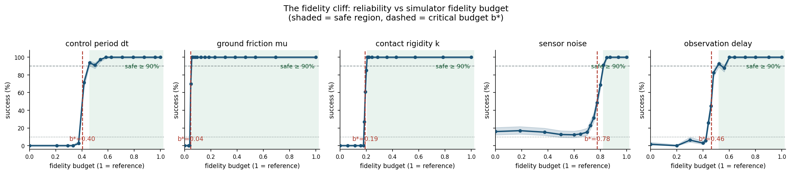
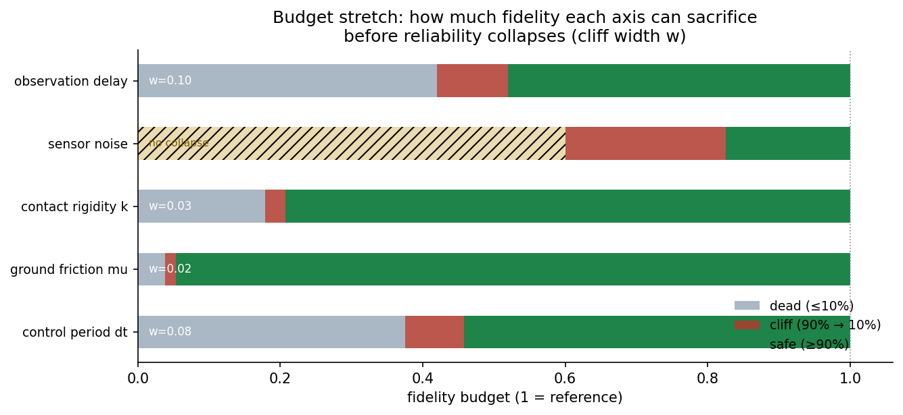
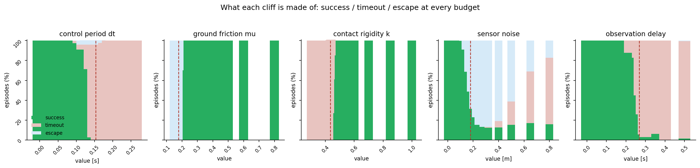

Fidelity budgets and their cliffs for a contact-rich manipulation policy
Subject: sim-to-real-style transfer of a fixed-gain manipulation policy across degraded simulators Method: a deterministic 2D pushing task, one policy calibrated at reference fidelity, five physical knobs swept one at a time over 84 budget cells × 300 seeds Main result: four of five fidelity budgets collapse at a critical point; only sensor noise degrades gracefully — and the failure mode tells you which knob broke
Real2Sim2Real loops assume the simulator is a faithful stand-in for reality — but
only up to a point. That point, the fidelity budget at which a calibrated policy
stops transferring, is almost never measured. We build a deterministic 2D pushing
task, calibrate a PD push policy once in a reference (high-fidelity) simulator,
then replay it — unchanged — as five physical knobs are degraded one at a time:
the control period dt, ground friction mu, contact rigidity k, sensor noise,
and observation delay.
Three results, each precise enough to be a design rule:
mu
(0.185 → 0.175) takes reliability from 100% to 0%.Every simulation budget is a negotiation: cheaper simulators run faster, but a policy that works in the simulator stops working when the sim stops being a faithful stand-in. Where exactly is the boundary? A contact-rich pushing task is the sharpest possible probe, because the whole policy rests on a handful of physical quantities — how fast the actuator responds, how much friction the ground provides, how rigid the contact is — that the simulator controls directly.
We answer a quantitative question: for each fidelity knob, what is the smallest budget that keeps transfer reliability above 90%, and what happens just below it?
A circular pusher (radius 0.35 m) drives a block (radius 0.25 m) from a jittered start position toward a goal 4 m away. The goal is a disc of radius 0.18 m; the episode must finish within 15 s. Success means the block enters the goal and comes to rest (speed below 0.05 m/s); failure is either a timeout (15 s elapsed) or an escape (the block leaves the ±6 m workspace).
Physics advances on a fixed 2 ms substep. The contact model is deliberately quasi-static and analytic so that each fidelity knob has a clean, interpretable effect:
dt. The policy re-decides every dt seconds while physics
steps at 2 ms. The actuator is a critically-damped second-order system whose
bandwidth equals the control rate 1/dt: a coarse control period simply cannot
execute high-frequency commands, and the pusher acts with progressively staler,
more sluggish authority.mu. The block decelerates at mu·g once sliding; a low
coefficient lets it coast through the goal instead of stopping.k. The block absorbs a fraction k of the pusher's push
velocity (1 = rigid, ≪1 = soggy contact). A soft contact also lets the block
skid sideways off the push line.delay seconds ago.The policy is a PD position controller (positional gain 80, damping 15, acceleration limit 60 m/s²) that aims at a point 0.30 m behind the block, along the direction from block to goal, and brakes hard (gain 40) once the block is inside the goal. Gains are calibrated once at the reference configuration and frozen; every degraded run replays the identical controller. Degradation is entirely a property of the simulator, never of the policy — this is exactly the sim-to-real transfer that the sweep measures.
The sweep varies one knob at a time over a grid of 16–18 values spanning the
reference value down to a fully degraded one (84 cells in total), running 300
deterministic seeds per cell (25,200 episodes, minutes on a laptop). Each grid
point is normalised to a fidelity budget b ∈ [0, 1], where b = 1 is the
reference simulator and b = 0 is the most degraded configuration sampled.

Every axis starts at 100% reliability and degrades monotonically. The summary:
| Axis | Critical budget b* | Critical value | Safe (≥90%) | Collapse (≤10%) | Width | Dominant failure |
|---|---|---|---|---|---|---|
Friction mu |
0.044 | 0.179 | b ≥ 0.054 (mu ≥ 0.185) |
b ≤ 0.038 (mu ≤ 0.175) |
0.015 | escape |
Contact rigidity k |
0.191 | 0.433 | b ≥ 0.207 (k ≥ 0.445) |
b ≤ 0.179 (k ≤ 0.425) |
0.028 | timeout |
Control period dt |
0.404 | 0.153 s | b ≥ 0.458 (dt ≤ 0.14 s) |
b ≤ 0.375 (dt ≥ 0.16 s) |
0.083 | timeout |
| Sensor delay | 0.463 | 0.269 s | b ≥ 0.520 (delay ≤ 0.24 s) |
b ≤ 0.420 (delay ≥ 0.29 s) |
0.100 | timeout |
| Sensor noise | 0.777 | 0.179 m | b ≥ 0.825 (noise ≤ 0.14 m) |
never (floor ≈ 15%) | 0.225 | escape → timeout |

The two knobs on the same observation channel behave completely differently.
Sensor noise is the only graceful axis: reliability erodes continuously from
100% at noise = 0 to ~70% at 0.16 m, crosses 50% at noise ≈ 0.18 m — the
same order as the 0.18 m goal radius — and then settles on a floor of 12–17%
that survives even total budget exhaustion. Noise perturbs the amplitude of
the observation; the feedback loop stays stable and the policy still converges,
just to a noisier, worse point.
Sensor delay is the opposite. Reliability holds at ~100% until delay ≈ 0.24 s,
then collapses: 83% at 0.26 s, 45% at 0.27 s, 26% at 0.28 s, 6% at 0.29 s.
Delay perturbs the phase of the feedback loop, and phase lag has a hard
stability boundary — the classical delay margin. An amplitude perturbation
degrades you continuously; a phase perturbation breaks the loop at a threshold.
Friction, contact rigidity and control period all produce the same pattern: reliability sits at 100% across a large range, then falls off a cliff in a few steps of the grid.
Friction is the sharpest. The block decelerates at mu·g, so the braking
requirement — stop the block inside the 0.18 m goal — sets a threshold. Above
mu = 0.185 reliability is 100%; below mu = 0.175 it is 0%. The entire
transition happens across Δmu = 0.01. The dominant failure at the cliff is
escape: the block coasts through the goal, never stops, and slides off the
workspace. This is a pure loss of control authority.
Contact rigidity collapses at k ≈ 0.43: below it, the block moves at less than
half the push speed, the push crawls, and every episode ends in timeout. The
control-period cliff sits at dt ≈ 0.15 s — an actuator bandwidth of ~6.5 Hz,
below which the critically-damped actuator cannot track the PD commands fast
enough to finish the push; failures are again timeout.

The failure-mode decomposition (success / timeout / escape at every grid point)
makes the mechanism legible. Escape is caused by friction and, at the noise cliff,
by the observed goal being offset — the policy pushes the block past the goal.
Timeout is caused by dt, k and delay — the push is too slow to finish, the
contact transmits too little force, or the loop acts on a state too old to brake
in time. Given a simulator that reports low reliability, the failure mode alone
narrows the fault to one knob.
Three design rules for anyone spending a simulation budget:
mu tolerates degradation down
to 23% of its reference value, then fails across a 0.01 step. A simulator that
is "close to" the reference on these axes must be verified, not assumed:
the safe region and the cliff sit adjacent to each other.The cliff shapes also validate the quasi-static model itself: the five axes degrade monotonically, the reference simulator transfers perfectly, and the brittle/critical axes collapse cleanly at physically meaningful thresholds — friction at the brake limit, rigidity at half the push speed, delay at the loop's phase margin, noise at the scale of the goal itself.
dt; noise uses a fixed
per-episode perturbation scaled by the budget (see src/simleap/sim.py)src/simleap/policy.py)results/sweep.json; verify with python -m simleap.check, extract
claims with scripts/paper_facts.py, figures with scripts/render_figures.py